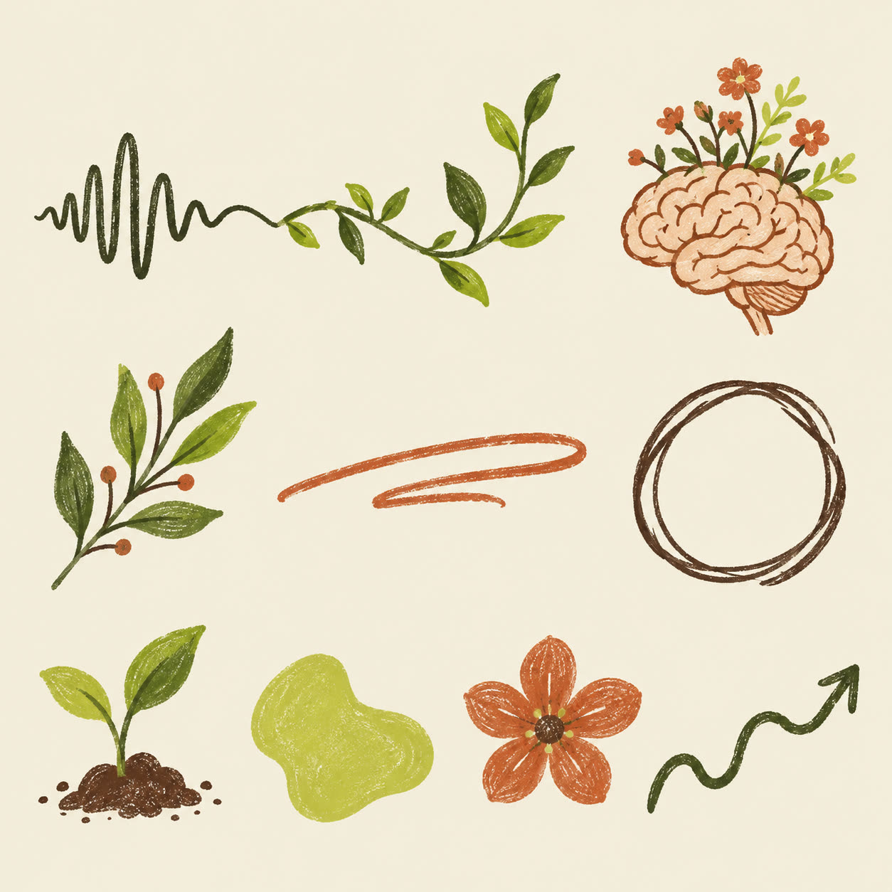
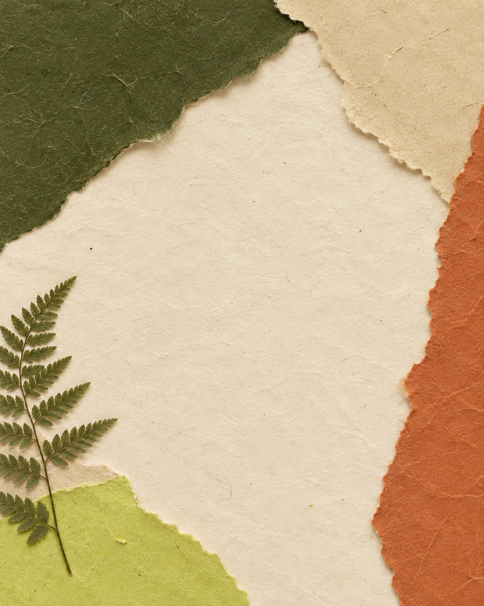
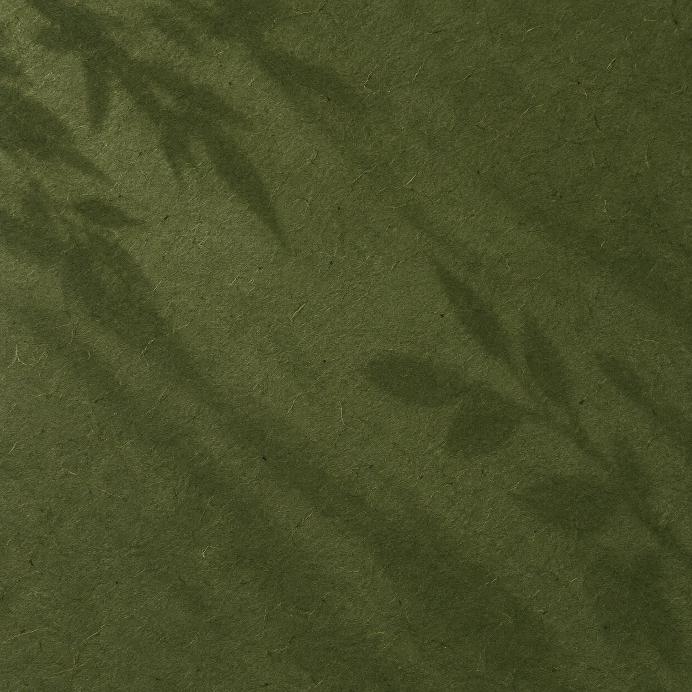
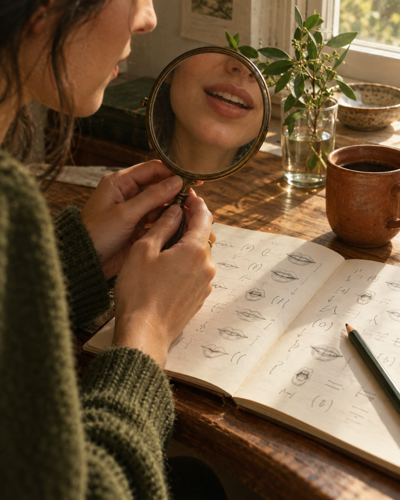

A marca nasce da sua história
Bióloga que reprovou em inglês na escola e destravou aos 22. Ensina com autenticidade, aceitação e empatia: parceira de jornada, nunca juíza de caneta vermelha.
Profissional cansada que entende tudo, mas trava na hora de falar. "Dá branco", "congelo na pergunta". Quer reuniões, entrevistas e congressos em inglês, com tranquilidade.
Leve, moderna e acolhedora, com um pouco de detalhe. Mistura português e inglês. Nunca arrogante, coach, genérica ou crítica.
A paleta é a sua, só organizada
Mantive as cores que você mandou e defini quanto cada uma aparece no feed. O verde-limão entra pequeno, como um respiro. Toque numa cor para copiar o código.
Fundo do post
Cor de destaque
Toda combinação daqui funciona dentro da marca. Se tiver uma favorita, conta pra gente lá no fim.
Os músculos que fazem você falar inglêse como acordar eles
arrasta →Uma serifa macia, uma letra à mão
A serifa dá autoridade sem ficar fria. A letra à mão é o seu jeito de falar, e entra só numa palavra por vez. Escreva uma frase sua e veja nas três fontes.
Desenhos que brotam
Nada de bandeira nem ícone de escola. Os elementos vêm da sua história: a voz que vira planta, o cérebro florescendo, papel de verdade com textura.



O feed ganha vida
Uma prévia de como os templates conversam entre si. Ao lado, um carrossel de exemplo para deslizar, no tema que você quer começar: os músculos da fala.

Treine no espelhoOs músculos que fazem você falar inglêse como acordar eles
1/4 · arrasta →Sua boca aprendeu português primeiro
Cada língua usa os músculos do rosto de um jeito. Por isso o "th" parece impossível no começo. Não é falta de talento: é treino de músculo.
2/4O som do TH
Ponha a ponta da língua entre os dentes e sopre devagar. Agora diga "think". Sem pressa, na frente do espelho.
3/4Pode tentar. Eu tô aqui.
Salve esse post e pratique 2 minutos por dia. Me conta nos comentários qual som mais te trava.
4/4A rotina real, em luz quente
Luz de janela, de manhã ou fim de tarde. Nada de flash nem luz branca de escritório.
Três cenários: sua mesa de estudo, a sua casa (poltrona, livros, caneca) e a natureza, como as poses no parque que você separou.
Não só o seu rosto: mãos, caderno, espelho, paisagem. Isso conversa com o seu conteúdo e deixa o feed respirando.
Roupas nas cores da marca: verdes, terrosos, bege e jeans aparecem sozinhos nas fotos.
- Bandeiras e o azul-vermelho de EUA e Inglaterra
- Cara corporativa de escola tradicional
- Monograma e balão de fala sozinho (é a cara do Take it Easy)
- Tom de coach e promessa de fluência rápida
O que você achou?
Marque cada parte e escreva o que quiser. No fim, toque em "Copiar minha resposta" e cole no WhatsApp. Sem o seu ok, a gente não segue para o logo.